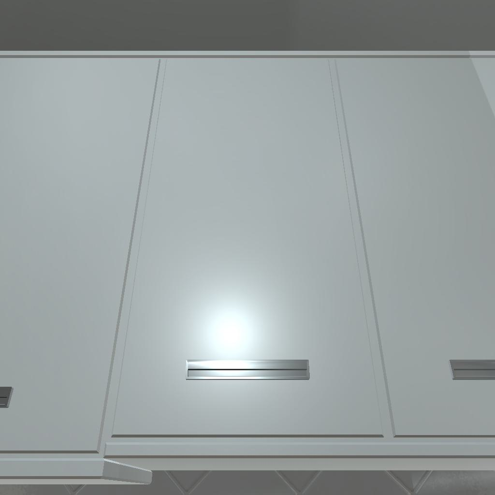

---------------------------------------------------------task: 21---------------------------------------------------------
--------------------------------------------------------------------------------------------------------------------------------------------------------------------
--------------------------------------------------------------------------------------------------------------------------------------------------------------------
Step:--------------------------------------------------------------------------12-------------------------------------------------------------------------------
----------------------------------------
VLM Prompt:
Image1:
Image2:
**Instruction**
1. Analyze the provided images to identify all visible household objects and compare the difference between images (e.h. whether the object is opened or not and taken on hand or not), focusing on those relevant to the task description "put a hot cup in countertop."
2. Use the analysis of images and the task hint "The agent must find an object of the desired type, pick it up, go to a microwave, heat the object with the microwave, then find the correct location to place it, and put it down there. The agent does not need to use the microwave button or open the microwave to heat the object, and the agent just needs to do action that is "heat the object with the microwave"." to answer the question: what is the most reasonable action in the choices for the task description "put a hot cup in countertop"?
3. Decide and write the answer using the template: The answer is: (i): , where i is the real number. If there is no desired object in images, search every place based on **Initial Observation** to find the object. And if no one is exactly correct, choose a similar answer.
**Initial Observation**
You are in the middle of a room. Looking quickly around you, you can see cabinet (1-6), microwave (1), countertop (1-2), coffeemachine (1), toaster (1), sink (1), sinkbasin (1), fridge (1)
**Answer Choices**
(1): go to cabinet 2
(2): go to cabinet 3
(3): go to microwave 1
(4): go to cabinet 4
(5): go to cabinet 5
(6): go to cabinet 6
(7): go to countertop 1
(8): go to coffeemachine 1
(9): go to toaster 1
(10): go to countertop 2
(11): go to sink 1
(12): go to sinkbasin 1
(13): go to fridge 1
(14): open cabinet 1
(15): close cabinet 1
(16): examine cabinet 1
**Answer**
Let's think step by step by following the instructions.
----------------------------------------
----------------------------------------
Original Response:
Image Analysis:
Both Image1 and Image2 appear to show the same view of a closed cabinet with handles. There is no visible difference between the two images, and no object appears to be opened or held in hand.
Task Hint Analysis:
The task hint suggests that the agent needs to pick up a cup, heat it in the microwave, and then place it on the countertop. The agent does not need to interact with the microwave buttons or open the microwave door.
Based on the Initial Observation, the agent is surrounded by various household items, including cabinets, a microwave, countertops, a coffee machine, a toaster, a sink, a sink basin, and a fridge.
Answer:
Given that the images do not show any cups or objects that can be heated, the agent must search for a cup. According to the Initial Observation, cabinets are a likely place to find cups. Since the task involves heating the object, it is most reasonable for the agent to go to the microwave first to perform the "heat the object with the microwave" action. After heating the cup, the agent will need to place it on the countertop. Therefore, the most reasonable action for the task "put a hot cup in countertop" would be to first go to the microwave, heat the cup, and then go to a countertop to place it.
The answer is: (3): go to microwave 1
----------------------------------------
----------------------------------------
>>> Refine Original VLM Response and Get Pure Action: go to microwave 1
----------------------------------------
-----------------------------------------------------------------
Running time: 15.433995246887207 seconds
Total Money: 10.709160000000002
-----------------------------------------------------------------
-----------------------------------------------------------------
Text Observation:Nothing happens.
-----------------------------------------------------------------
UNSUCCEED